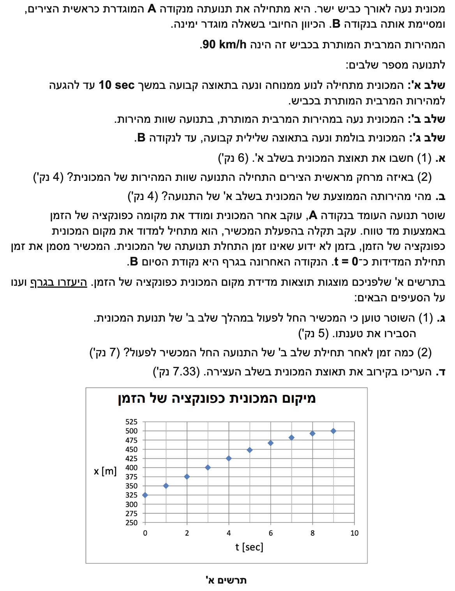

פתרון מודרך בפיזיקה: תנועה בקו ישר (קינמטיקה)
רמת 5 יח"ל
עודכן:
--- --:--:--
מבט כללי על השאלה
שלום תלמידים יקרים! לפנינו שאלה קלאסית בקינמטיקה המשלבת ניתוח תנועה במספר שלבים והבנה של גרפים.
נעבור על הפתרון שלב אחר שלב, תוך הקפדה על המרת יחידות והצבה מדויקת בנוסחאות.

[תמונת השאלה המקורית]
לא נמצאה תמונה בשם question-image.png באותה תיקייה.
מה נתון:
המכונית מתחילה לנוע ממנוחה, לכן המהירות ההתחלתית היא \( v_0 = 0 \).
זמן התנועה בשלב א' הוא \( t = 10 \text{ sec} \).
בסוף השלב היא מגיעה למהירות המרבית המותרת, שהיא \( 90 \text{ km/h} \).
שלב 0 - המרת יחידות: עלינו להמיר את המהירות ליחידות תקניות (MKS), כלומר מטרים לשנייה (\( \text{m/s} \)). לשם כך נחלק ב-\( 3.6 \):
\[ v = \frac{90}{3.6} = 25 \text{ m/s} \]
מה מחפשים:
את תאוצת המכונית (נסמנה ב- \( a_1 \)) במהלך שלב א'.
נוסחאות מהדף:
\( v = v_0 + at \)
פתרון צעד-אחר-צעד:
נציב את הנתונים שלנו במשוואה:
\[ 25 = 0 + a_1 \cdot 10 \]
\[ 10 \cdot a_1 = 25 \]
\[ a_1 = \frac{25}{10} = 2.5 \text{ m/s}^2 \]
מסקנה: תאוצת המכונית בשלב א' היא \( a_1 = 2.5 \text{ m/s}^2 \).
💡 טיפ מורה:
תמיד, אבל תמיד, לפני שמתחילים להציב בנוסחאות, ודאו שכל הנתונים מופיעים באותה מערכת יחידות! חלוקה ב-3.6 היא הדרך המהירה לעבור מקמ"ש למטר/שנייה, מכיוון שבקילומטר יש 1000 מטרים ובשעה יש 3600 שניות (\( 1000/3600 = 1/3.6 \)).
גודל המהירות גדל כיוון שווקטור התאוצה באותו כיוון של ווקטור המהירות.
מה נתון:
הנקודה A מוגדרת כראשית הצירים, לכן \( x_0 = 0 \).
מצאנו בסעיף הקודם שתאוצת המכונית היא \( a_1 = 2.5 \text{ m/s}^2 \).
מהירות התחלתית \( v_0 = 0 \) וזמן התנועה הוא \( t = 10 \text{ sec} \).
מה מחפשים:
את המרחק מראשית הצירים בו התחילה התנועה שוות המהירות. במילים אחרות, את המיקום \( x_1 \) בסוף שלב א', שהוא נקודת ההתחלה של שלב ב'.
נוסחאות מהדף:
\( x = x_0 + v_0t + \frac{1}{2}at^2 \)
חישוב:
נציב את כל הנתונים הרלוונטיים לשלב א':
\[ x_1 = 0 + 0 \cdot 10 + \frac{1}{2} \cdot 2.5 \cdot (10)^2 \]
\[ x_1 = 0 + 0 + 1.25 \cdot 100 \]
\[ x_1 = 125 \text{ m} \]
מסקנה: מיקום תחילת שלב ב' הוא \( x_1 = 125 \text{ m} \).
💡 טיפ מורה:
דרך נוספת לוודא את התוצאה היא לדמיין גרף מהירות-זמן (\( v-t \)). שלב א' הוא משולש שהבסיס שלו הוא 10 והגובה שלו הוא 25. השטח מתחת לגרף מתאר את ההעתק: \( \Delta x = \frac{10 \cdot 25}{2} = 125 \text{ m} \). שתי הדרכים נכונות לחלוטין!
מה נתון:
מתוך חישובינו הקודמים עבור שלב א': ההעתק של המכונית הוא \( \Delta x = 125 \text{ m} \) ופרק הזמן שלקח לה לעבור מרחק זה הוא \( \Delta t = 10 \text{ sec} \).
מה מחפשים:
את המהירות הממוצעת (\( \overline{v} \)) של המכונית לאורך שלב א'.
נוסחאות מהדף:
\( \overline{v} = \frac{\Delta x}{\Delta t} \)
חישוב:
נציב את הנתונים:
\[ \overline{v} = \frac{125}{10} = 12.5 \text{ m/s} \]
מסקנה: המהירות הממוצעת בשלב א' היא \( \overline{v} = 12.5 \text{ m/s} \).
💡 טיפ מורה:
זכרו כלל חשוב: כאשר התאוצה קבועה (כמו במקרה שלנו), המהירות הממוצעת שווה בדיוק לממוצע החשבוני של המהירות ההתחלתית והסופית! אפשר לראות זאת בדף הנוסחאות בביטוי \( x = x_0 + \frac{v_0 + v}{2}t \). אם נציב נקבל \( \overline{v} = \frac{0 + 25}{2} = 12.5 \text{ m/s} \). התאמה מושלמת!
מה נתון:
נתון גרף מיקום כפונקציה של הזמן שמדד השוטר. אנו יכולים לחלץ מהגרף נקודות. לדוגמה, בתחילת המדידה של המכשיר (\( t=0 \) בגרף), המיקום הוא \( x = 325 \text{ m} \). לאחר שנייה אחת (\( t=1 \text{ sec} \)), המיקום הוא \( x = 350 \text{ m} \).
כמו כן, אנו יודעים שבשלב ב' המכונית נעה במהירות קבועה של \( v = 25 \text{ m/s} \).
מה מחפשים:
להסביר מדוע טענת השוטר נכונה. כלומר, להוכיח שברגע שבו המכשיר החל לפעול, המכונית כבר הייתה בשלב ב' של תנועתה.
נוסחאות מהדף:
\( v = \frac{\Delta x}{\Delta t} \)
פתרון צעד-אחר-צעד:
נחשב את מהירות המכונית לפי הנתונים המוקדמים ביותר בגרף (השנייה הראשונה למדידה):
\[ v = \frac{x(1) - x(0)}{1 - 0} \]
\[ v = \frac{350 - 325}{1} = 25 \text{ m/s} \]
מכיוון שהמהירות שחישבנו מתוך הגרף היא בדיוק \( 25 \text{ m/s} \) (שהיא המהירות המרבית והקבועה שבה נעה המכונית בשלב ב'), והגרף הוא קו ישר (שיפוע קבוע) עד לנקודה שבה \( t=5 \), ניתן לקבוע בודאות שבעת הפעלת המכשיר, המכונית הייתה בעיצומו של שלב ב'.
מסקנה: השוטר צודק - המהירות בתחילת המדידה היא \( 25 \text{ m/s} \), שהיא בדיוק מהירות המכונית בשלב ב'.
💡 טיפ מורה:
זהו סעיף הבנה קלאסי. מטרתו לראות שאתם מבינים את הקשר הפיזיקלי: קו ישר בגרף מיקום-זמן = מהירות קבועה = שלב ב' בתנועת המכונית לפי סיפור המסגרת.
מה נתון:
משלבים קודמים מצאנו: שלב ב' התחיל כאשר המכונית הייתה במיקום \( x_1 = 125 \text{ m} \).
המכשיר החל לפעול (\( t_{\text{graph}}=0 \)) כאשר המכונית הייתה במיקום \( x_2 = 325 \text{ m} \).
המהירות במהלך כל הזמן הזה היא קבועה: \( v = 25 \text{ m/s} \).
מה מחפשים:
את פרק הזמן (\( \Delta t \)) שחלף מהרגע בו החל שלב ב' ועד הרגע בו המכשיר החל לפעול.
נוסחאות מהדף:
\( \Delta x = v \cdot \Delta t \implies \Delta t = \frac{\Delta x}{v} \)
חישוב:
תחילה, נחשב את ההעתק שעברה המכונית *בתוך* שלב ב' עד שהמכשיר נדלק:
\[ \Delta x = x_2 - x_1 = 325 - 125 = 200 \text{ m} \]
כעת, נמצא כמה זמן לקח למכונית לעבור את המרחק הזה במהירות של \( 25 \text{ m/s} \):
\[ \Delta t = \frac{200}{25} = 8 \text{ sec} \]
מסקנה: הזמן שחלף מתחילת שלב ב' עד המדידה הוא \( \Delta t = 8 \text{ sec} \).
💡 טיפ מורה:
שימו לב לדקויות בניסוח השאלה! שאלו "כמה זמן לאחר תחילת שלב ב'". לא שאלו מה הזמן הכולל מתחילת התנועה. אם היו מבקשים את הזמן מתחילת התנועה כולה (מנקודה A), היינו צריכים להוסיף את 10 השניות של שלב א', ולקבל 18 שניות. קריאה מדוקדקת מונעת איבוד נקודות יקרות!
מה נתון:
על פי הגרף, החל מ-\( t=5 \text{ sec} \) במכשיר (כאשר המיקום \( x = 450 \text{ m} \)), השיפוע של הגרף מפסיק להיות קבוע, מה שמעיד על תחילת שלב הבלימה (שלב ג'). לכן המהירות ההתחלתית לשלב זה היא \( v_0 = 25 \text{ m/s} \).
נתון בשאלה (וגם בגרף ניתן לראות כי זו הנקודה האחרונה) שהמכונית בולמת "עד לנקודה B". המיקום בנקודה B לפי הגרף הוא ב-\( t=9 \text{ sec} \) ו-\( x = 500 \text{ m} \). בנקודה זו המכונית נעצרת, ולכן המהירות הסופית היא \( v = 0 \).
פרק הזמן של שלב העצירה: \( \Delta t = 9 - 5 = 4 \text{ sec} \).
מה מחפשים:
את תאוצת המכונית (נסמנה ב- \( a_3 \)) במהלך שלב ג' (בלימה).
נוסחאות מהדף:
\( v = v_0 + at \implies a = \frac{v - v_0}{\Delta t} \)
חישוב:
נציב את הנתונים עבור שלב העצירה:
\[ a_3 = \frac{0 - 25}{4} \]
\[ a_3 = -6.25 \text{ m/s}^2 \]
אפשר לבצע בדיקה נוספת שמחזקת את ההנחה שהבלימה החלה ב-\( t=5 \): לפי הנוסחה \( \Delta x = \frac{v_0 + v}{2} \cdot \Delta t \) נקבל
\( \Delta x = \frac{25 + 0}{2} \cdot 4 = 12.5 \cdot 4 = 50 \text{ m} \).
אם הבלימה התחילה ב-\( 450 \text{ m} \) והסתיימה ב-\( 500 \text{ m} \), ההפרש הוא בדיוק \( 50 \text{ m} \). לכן ההנחה שהבלימה החלה ב-\( t=5 \) מתאימה היטב לנתוני הגרף.
מסקנה: התאוצה בשלב העצירה היא \( a_3 = -6.25 \text{ m/s}^2 \).
💡 טיפ מורה:
מדוע השתמשו במילה "העריכו"? מן הגרף אי אפשר לדעת בוודאות אם שלב הבלימה התחיל בדיוק ב-\( t=5 \) או מעט אחר כך, למשל ב-\( t=5.2 \) או ב-\( t=5.5 \). מה שאפשר לקבוע בוודאות הוא שהשינוי בשיפוע מתחיל בין \( t=5 \) ל-\( t=6 \). לכן בפתרון מניחים שהבלימה התחילה ב-\( t=5 \), כי זו נקודת הזמן הברורה הראשונה שמסמנת את תחילת השינוי בגרף. אפשר גם לבדוק את סבירות ההנחה הזאת: אם מחשבים את התאוצה על סמך הנתונים בין \( t=6 \) ל-\( t=9 \), מתקבל שוב אותו ערך. זו אינדיקציה חזקה לכך שהבחירה ב-\( t=5 \) נכונה. שימו לב: התאוצה שלילית, כי היא מנוגדת לכיוון התנועה, ולכן גודל המהירות הולך וקטן עד לעצירה.
גודל המהירות קטן, ווקטור תאוצה מנוגד למהירות.